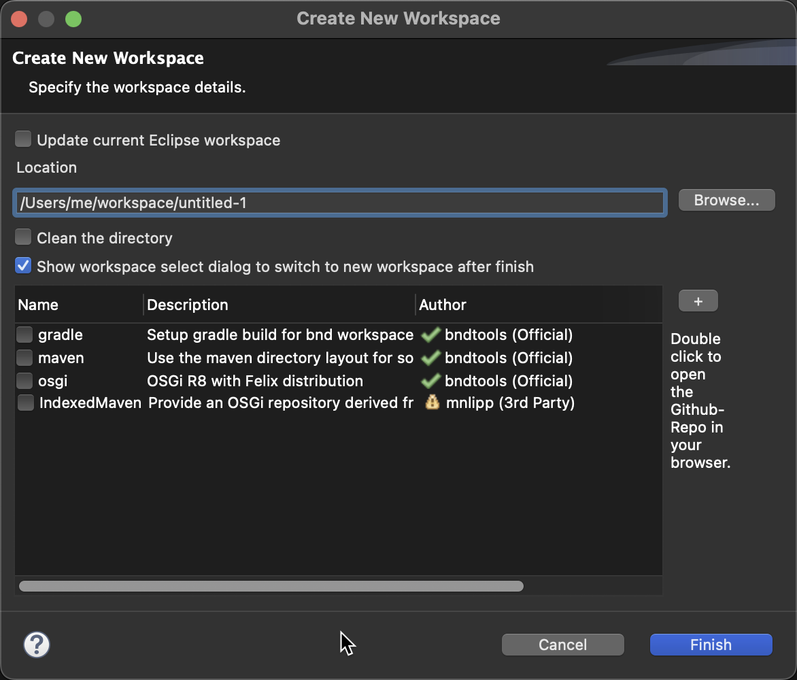

Templates for Workspaces
A good workspace setup makes all the difference in the development cycle. Since a workspace can contain many projects, creating new workspaces is relatively rare. However, a workspace tends to consist of many aspects. There is the gradle setup, the OSGi release, maybe the maven layout etc. Initially, we attempted to use a single GitHub repository as a template for new workspaces, but this approach quickly became complex.
For example, if someone created a library for bnd, to make it easy for the user to setup his functionality, the author of the library had to maintain a full workspace with gradle, etc. This put the burden on chasing the OSGi release, the gradle releases, on the people that were willing to spread the gospel around OSGi/bndtools.
Template Fragments
Instead, we developed fragment templates. A fragment models one aspect of a workspace and is maintained in Github repository, but one repository can hold many fragments. Multiple template fragments can be combined by the end-user to enrich the workspace with various aspects. During workspace creation there is a wizard where one can select template fragments via checkboxes.

Official templates from the bndtools Github organisation are shown with a green checkmark. Non-official templates from 3rd-party authors are shown with a yellow exclamation mark.
Note: Check templates before installation
Make sure you carefully check templates beforehand, since this is content from potentially untrusted sources which is downloaded to your computer. You should double click on an entry to open the Github repostory of that template in your browser. This allows you to examine the content which is about to be downloaded to your workspace when you press finish. If you select at least one 3rd-Party template a confirmatin popup asks you to confirm, if you trust the authors.
The workspace is already prepared for this model of fragments. The merged instructions mean that
we can extend the properties and instructions from many different sources. However, the most important
feature here is the cnf/ext folder. Any bnd or special fragment file placed in this folder will automatically
be ready before the build.bnd file is read. For example, a fragment could contain the
index for OSGi R8. See build.
Providing template fragments as a developer
There is a single master index for all template fragments hosted on
https://github.com/bndtools/workspace-templates/blob/master/index.bnd
This index is open for any person or organization that maintains one or more fragment and seeks an easy way to make them available to bndtools users. All that is needed is to host the fragment somewhere and provide a pull request (PR) to add it to this index file.
The format of the index file is like all Parameters.
-
key– The key is the identity of the fragment. It is either a URL or provides the following structure:id ::= [organization ['/' repository [ '/' path ] ['#' git-ref ]]
The id is resolved against bndtools/workspace-templates#master. Therefore, in the example organization,
the example is a valid id that resolves to example/workspace-templates#master. Since the ID has a path,
it is possible to host multiple fragments in a single repository.
Instead of a branch name like #master as git-ref you could also point to a specific commit via its SHA e.g. #567648ff425693b27b191bd38ace7c9c10539c2d.
The index has the following attributes for a clause:
name– The human readable name for the template fragmentdescription– A human readable description for the template fragmentrequire– A comma separated list of fragment ids. Do not forget to quote when multiple fragments are requiredtag– A comma separated list of tags, quotes are needed when there are multiple.
Example
For example consider this index.bnd:
-workspace-templates \
bndtools/workspace-templates/gradle; \
name=gradle; \
description="Setup gradle build for bnd workspace", \
bndtools/workspace-templates/maven#master; \
name=maven; \
description="Use the maven directory layout for sources and binaries", \
bndtools/workspace-templates/osgi#master; \
name=osgi; \
description="OSGi R8 with Felix distribution",\
acme-org/myrepo/subfolder/workspace-template#commitSHA; \
name=3rdparty-template; \
description="A Template fragment by acme-org at a specific commit SHA"
The id must resolve to a folder in the repository, and can be translated to github URLs:
| ID | URL |
|---|---|
bndtools/workspace-templates/gradle |
https://github.com/bndtools/workspace-templates/tree/master/gradle |
bndtools/workspace-templates/maven#master |
https://github.com/bndtools/workspace-templates/tree/master/maven |
acme-org/myrepo/subfolder/workspace-template#otherbranch |
https://github.com/acme-org/myrepo/tree/otherbranch/subfolder/workspace-template |
acme-org/myrepo/subfolder/workspace-template#567648ff425693b27b191bd38ace7c9c10539c2d |
https://github.com/acme-org/myrepo/tree/567648ff425693b27b191bd38ace7c9c10539c2d/subfolder/workspace-template |
By default, bnd will recursively copy the
content to the new workspace. However, if there is a file tool.bnd present it will use this to
guide the copying process. This bnd file looks like:
-tool \
.*;tool.bnd;readme.md;skip=true, \
gradle.properties;macro=true;append=true,\
gradlew;exec=true, \
*
The -tool instruction is a SELECT that is matched against the file paths (not names!) in the fragment template folder.
The attributes that can be set are:
skip=true– Skip the selected file,append=true– Allow duplicates, appendexec=true– Set the execute bit on non-windows systemspreprocess=true– Preprocess the file (this uses the tool file and the current workspace as domain.delete=true– Deletes an existing file in the target. Cannot be wildcarded
It is possible to define the -workspace-templates instruction in the build.bnd file.
It must contain the same format as the index. This local index is merged with the main index. In the
Bndtools GUI, it is possible to add an additional index from a URL or file via the ‘+’ button.
For example you can directly point to a Github URL like:
https://raw.githubusercontent.com/bndtools/workspace-templates/567648ff425693b27b191bd38ace7c9c10539c2d/index.bnd